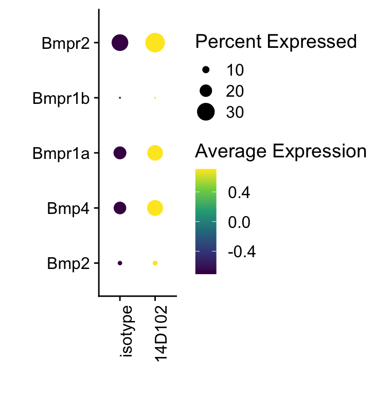
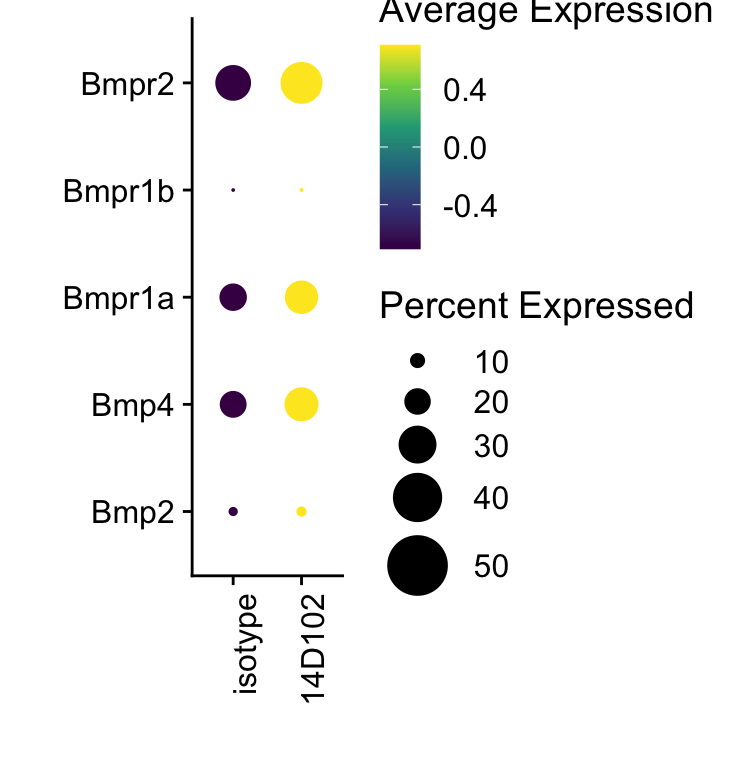
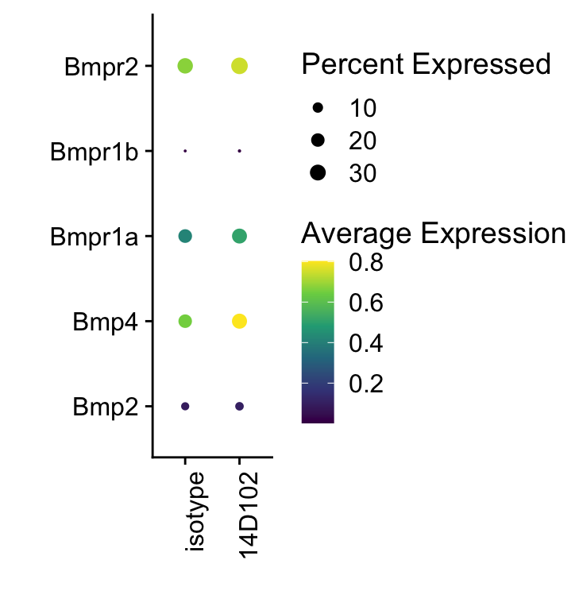

DE genes treated versus untreated total cells
Mechthild Lütge
24 July 2020
Last updated: 2022-03-22
Checks: 6 1
Knit directory: TCRM_Christina/
This reproducible R Markdown analysis was created with workflowr (version 1.7.0). The Checks tab describes the reproducibility checks that were applied when the results were created. The Past versions tab lists the development history.
The R Markdown is untracked by Git. To know which version of the R Markdown file created these results, you’ll want to first commit it to the Git repo. If you’re still working on the analysis, you can ignore this warning. When you’re finished, you can run wflow_publish to commit the R Markdown file and build the HTML.
Great job! The global environment was empty. Objects defined in the global environment can affect the analysis in your R Markdown file in unknown ways. For reproduciblity it’s best to always run the code in an empty environment.
The command set.seed(20200518) was run prior to running the code in the R Markdown file. Setting a seed ensures that any results that rely on randomness, e.g. subsampling or permutations, are reproducible.
Great job! Recording the operating system, R version, and package versions is critical for reproducibility.
Nice! There were no cached chunks for this analysis, so you can be confident that you successfully produced the results during this run.
Great job! Using relative paths to the files within your workflowr project makes it easier to run your code on other machines.
Great! You are using Git for version control. Tracking code development and connecting the code version to the results is critical for reproducibility.
The results in this page were generated with repository version c68cbed. See the Past versions tab to see a history of the changes made to the R Markdown and HTML files.
Note that you need to be careful to ensure that all relevant files for the analysis have been committed to Git prior to generating the results (you can use wflow_publish or wflow_git_commit). workflowr only checks the R Markdown file, but you know if there are other scripts or data files that it depends on. Below is the status of the Git repository when the results were generated:
Ignored files:
Ignored: .DS_Store
Ignored: .Rhistory
Ignored: .Rproj.user/
Ignored: data/GSEA/
Ignored: data/cellphonedb/
Ignored: data/data_old/
Ignored: output/.DS_Store
Untracked files:
Untracked: analysis/DEgenesTreatment.Rmd
Untracked: analysis/reembeddingFibro.Rmd
Untracked: analysis/visualizeTotalCellsUntreated.Rmd
Untracked: figure/DEgenesTreatment.Rmd/
Untracked: figure/reembeddingFibro.Rmd/
Unstaged changes:
Modified: analysis/analyseCPDBout.Rmd
Modified: analysis/createCBDBinput.Rmd
Note that any generated files, e.g. HTML, png, CSS, etc., are not included in this status report because it is ok for generated content to have uncommitted changes.
There are no past versions. Publish this analysis with wflow_publish() to start tracking its development.
load packages
suppressPackageStartupMessages({
library(SingleCellExperiment)
library(tidyverse)
library(Seurat)
library(magrittr)
library(dplyr)
library(purrr)
library(ggplot2)
library(here)
library(runSeurat3)
library(ggsci)
library(pheatmap)
library(ggpubr)
library(clusterProfiler)
library(org.Mm.eg.db)
library(DOSE)
library(enrichplot)
library(viridis)
})heatmap function
avgHeatmap <- function(seurat, selGenes, colVecIdent, colVecCond=NULL,
ordVec=NULL, gapVecR=NULL, gapVecC=NULL,cc=FALSE,
cr=FALSE, condCol=FALSE){
selGenes <- selGenes$gene
## assay data
clusterAssigned <- as.data.frame(Idents(seurat)) %>%
dplyr::mutate(cell=rownames(.))
colnames(clusterAssigned)[1] <- "ident"
seuratDat <- GetAssayData(seurat)
## genes of interest
genes <- data.frame(gene=rownames(seurat)) %>%
mutate(geneID=gsub("^.*\\.", "", gene)) %>% filter(geneID %in% selGenes)
## matrix with averaged cnts per ident
logNormExpres <- as.data.frame(t(as.matrix(
seuratDat[which(rownames(seuratDat) %in% genes$gene),])))
logNormExpres <- logNormExpres %>% dplyr::mutate(cell=rownames(.)) %>%
dplyr::left_join(.,clusterAssigned, by=c("cell")) %>%
dplyr::select(-cell) %>% dplyr::group_by(ident) %>%
dplyr::summarise_all(mean)
logNormExpresMa <- logNormExpres %>% dplyr::select(-ident) %>% as.matrix()
rownames(logNormExpresMa) <- logNormExpres$ident
logNormExpresMa <- t(logNormExpresMa)
rownames(logNormExpresMa) <- gsub("^.*?\\.","",rownames(logNormExpresMa))
## remove genes if they are all the same in all groups
ind <- apply(logNormExpresMa, 1, sd) == 0
logNormExpresMa <- logNormExpresMa[!ind,]
genes <- genes[!ind,]
## color columns according to cluster
annotation_col <- as.data.frame(gsub("(^.*?_)","",
colnames(logNormExpresMa)))%>%
dplyr::mutate(celltype=gsub("(_.*$)","",colnames(logNormExpresMa)))
colnames(annotation_col)[1] <- "col1"
annotation_col <- annotation_col %>%
dplyr::mutate(cond = gsub(".*_","",col1)) %>%
dplyr::select(cond, celltype)
rownames(annotation_col) <- colnames(logNormExpresMa)
ann_colors = list(
cond = colVecCond,
celltype=colVecIdent)
if(is.null(ann_colors$cond)){
annotation_col$cond <- NULL
}
## adjust order
logNormExpresMa <- logNormExpresMa[selGenes,]
if(is.null(ordVec)){
ordVec <- levels(seurat)
}
logNormExpresMa <- logNormExpresMa[,ordVec]
## scaled row-wise
pheatmap(logNormExpresMa, scale="row" ,treeheight_row = 0, cluster_rows = cr,
cluster_cols = cc,
color = colorRampPalette(c("#2166AC", "#F7F7F7", "#B2182B"))(50),
annotation_col = annotation_col, cellwidth=15, cellheight=10,
annotation_colors = ann_colors, gaps_row = gapVecR, gaps_col = gapVecC)
}sign plot funct
## adapted from CellMixS
visGroup_adapt <- function (sce,group,dim_red = "TSNE",col_group=pal_nejm()(8))
{
if (!is(sce, "SingleCellExperiment")) {
stop("Error:'sce' must be a 'SingleCellExperiment' object.")
}
if (!group %in% names(colData(sce))) {
stop("Error: 'group' variable must be in 'colData(sce)'")
}
cell_names <- colnames(sce)
if (!dim_red %in% "TSNE") {
if (!dim_red %in% reducedDimNames(sce)) {
stop("Please provide a dim_red method listed in reducedDims of sce")
}
red_dim <- as.data.frame(reducedDim(sce, dim_red))
}
else {
if (!"TSNE" %in% reducedDimNames(sce)) {
if ("logcounts" %in% names(assays(sce))) {
sce <- runTSNE(sce)
}
else {
sce <- runTSNE(sce, exprs_values = "counts")
}
}
red_dim <- as.data.frame(reducedDim(sce, "TSNE"))
}
colnames(red_dim) <- c("red_dim1", "red_dim2")
df <- data.frame(sample_id = cell_names, group_var = colData(sce)[,
group], red_Dim1 = red_dim$red_dim1, red_Dim2 = red_dim$red_dim2)
t <- ggplot(df, aes_string(x = "red_Dim1", y = "red_Dim2")) +
xlab(paste0(dim_red, "_1")) + ylab(paste0(dim_red, "_2")) +
theme_void() + theme(aspect.ratio = 1,
panel.grid.minor = element_blank(),
panel.grid.major = element_line(color = "grey", size = 0.3))
t_group <- t + geom_point(size = 1.5, alpha = 0.8,
aes_string(color = "group_var")) +
guides(color = guide_legend(override.aes = list(size = 1),
title = group)) + ggtitle(group)
if (is.numeric(df$group_var)) {
t_group <- t_group + scale_color_viridis(option = "D")
}
else {
t_group <- t_group + scale_color_manual(values = col_group)
}
t_group
}set dir
basedir <- here()
seurat <- readRDS(file = paste0(basedir,
"/data/MuHeart_totalCellsPlusTreated_integratedLabeled",
"_seurat.rds"))
Idents(seurat) <- seurat$label
seurat$age[which(seurat$treatment != "no")] <- "12wk"color vectors
colPal <- pal_igv()(length(levels(seurat)))
colGrp <- pal_jama()(length(unique(seurat$grp)))
colAge <- pal_uchicago()(length(unique(seurat$age)))
colStype <- pal_aaas()(length(unique(seurat$seqType)))
colDat <- c(pal_npg()(10),
pal_futurama()(10))[1:(length(unique(seurat$dataset)))]
colTreat <- pal_jama()(length(unique(seurat$treatment)))
names(colPal) <- levels(seurat)
names(colGrp) <- unique(seurat$grp)
names(colAge) <- unique(seurat$age)
names(colStype) <- unique(seurat$seqType)
names(colDat) <- unique(seurat$dataset)
names(colTreat) <- unique(seurat$treatment)
colLab <- c("#f4c37e", "#e73213", "#209ab9", "#df7f13",
"#609eca", "#caa160", "#dbb6ca", "#98bfe8",
"#7c0606", "#c2a17d", "#db27ab", "#dadada",
"#32b4a5", "#4c8376")
names(colLab) <- c("InfMonos", "Tcells", "Endothelial", "Macrophages",
"Fibroblasts", "pDCsDCs", "NKcells", "Perivascular",
"Neutrophils", "Bcells", "Cardiomyocytes", "proliferating",
"endocardialEndothelial", "capEndothelial")subset on 12wks data
seurat <- subset(seurat, treatment != "no")vis data
group
DimPlot(seurat, reduction = "umap", group.by = "grp", cols=colGrp)+
theme_bw() +
theme(axis.text = element_blank(), axis.ticks = element_blank(),
panel.grid.minor = element_blank()) +
xlab("UMAP1") +
ylab("UMAP2")
Sample
DimPlot(seurat, reduction = "umap", group.by = "dataset", cols=colDat)+
theme_bw() +
theme(axis.text = element_blank(), axis.ticks = element_blank(),
panel.grid.minor = element_blank()) +
xlab("UMAP1") +
ylab("UMAP2")
Age
DimPlot(seurat, reduction = "umap", group.by = "age", cols=colAge)+
theme_bw() +
theme(axis.text = element_blank(), axis.ticks = element_blank(),
panel.grid.minor = element_blank()) +
xlab("UMAP1") +
ylab("UMAP2")
SeqType
DimPlot(seurat, reduction = "umap", group.by = "seqType", cols=colStype)+
theme_bw() +
theme(axis.text = element_blank(), axis.ticks = element_blank(),
panel.grid.minor = element_blank()) +
xlab("UMAP1") +
ylab("UMAP2")
DimPlot(seurat, reduction = "umap", group.by = "seqType", cols=colStype)+
theme_void() 
Treatment
DimPlot(seurat, reduction = "umap", group.by = "treatment", cols=colTreat)+
theme_bw() +
theme(axis.text = element_blank(), axis.ticks = element_blank(),
panel.grid.minor = element_blank()) +
xlab("UMAP1") +
ylab("UMAP2")
DimPlot(seurat, reduction = "umap", group.by = "treatment", cols=colTreat)+
theme_void() 
label
DimPlot(seurat, reduction = "umap", group.by = "label", cols=colLab)+
theme_bw() +
theme(axis.text = element_blank(), axis.ticks = element_blank(),
panel.grid.minor = element_blank()) +
xlab("UMAP1") +
ylab("UMAP2")
DimPlot(seurat, reduction = "umap", group.by = "label", cols=colLab)+
theme_void() 
label split by seqType
DimPlot(seurat, reduction = "umap", group.by = "label", cols=colLab,
split.by = "seqType")+
theme_bw() +
theme(axis.text = element_blank(), axis.ticks = element_blank(),
panel.grid.minor = element_blank()) +
xlab("UMAP1") +
ylab("UMAP2")
label split by treat
DimPlot(seurat, reduction = "umap", group.by = "label", cols=colLab,
split.by = "treatment")+
theme_bw() +
theme(axis.text = element_blank(), axis.ticks = element_blank(),
panel.grid.minor = element_blank()) +
xlab("UMAP1") +
ylab("UMAP2")
DimPlot(seurat, reduction = "umap", group.by = "label", cols=colLab,
split.by = "treatment")+
theme_void() 
cnt Tab
table(seurat$label, seurat$seqType)
sc sn
Bcells 300 36
capEndothelial 41 6
Cardiomyocytes 1 5136
endocardialEndothelial 6 538
Endothelial 2200 1583
Fibroblasts 6199 71
InfMonos 363 20
Macrophages 1875 735
Neutrophils 131 0
NKcells 165 168
pDCsDCs 397 35
Perivascular 243 1110
proliferating 153 38
Tcells 1167 29table(seurat$label, seurat$grp)
TCRM
Bcells 336
capEndothelial 47
Cardiomyocytes 5137
endocardialEndothelial 544
Endothelial 3783
Fibroblasts 6270
InfMonos 383
Macrophages 2610
Neutrophils 131
NKcells 333
pDCsDCs 432
Perivascular 1353
proliferating 191
Tcells 1196table(seurat$label, seurat$treatment)
14D102 isotype
Bcells 42 294
capEndothelial 30 17
Cardiomyocytes 2732 2405
endocardialEndothelial 198 346
Endothelial 1940 1843
Fibroblasts 3797 2473
InfMonos 100 283
Macrophages 1204 1406
Neutrophils 62 69
NKcells 102 231
pDCsDCs 153 279
Perivascular 736 617
proliferating 46 145
Tcells 319 877overall DE genes
Idents(seurat) <- seurat$treatment
seurat$label_plus_treat <- paste0(seurat$label, "_", seurat$treatment)
seurat$label <- factor(seurat$label)
overallDE <- FindAllMarkers(object = seurat, assay ="RNA",
only.pos = TRUE, min.pct = 0.25,
logfc.threshold = 0.25,
test.use = "wilcox")
### plot DE genes top 15 avg logFC
DEGenesAll <- overallDE %>% group_by(cluster) %>%
mutate(geneID = gene) %>% top_n(15, avg_log2FC) %>%
mutate(gene=gsub(".*\\.", "", geneID)) %>%
filter(nchar(gene)>1)
Idents(seurat) <- seurat$label_plus_treat
ordDat <- expand.grid(levels(seurat$label), unique(seurat$treatment)) %>%
mutate(ord=paste0(Var1, "_", Var2)) %>% arrange(., Var1)
gapC <- seq(from=2, to=nrow(ordDat), by=2)
gapR <- c(15)
pOut <- avgHeatmap(seurat = seurat, selGenes = DEGenesAll,
colVecIdent = colLab,
ordVec=ordDat$ord,
gapVecR=gapR, gapVecC=gapC,cc=F,
cr=F, condCol=T, colVecCond = colTreat)
sc heatmap
DefaultAssay(object = seurat) <- "integrated"
seurat <- ScaleData(seurat, features = rownames(seurat), split.by = "seqType")
### plot DE genes top 15 avg logFC
DEGenesAll <- overallDE %>% group_by(cluster) %>%
top_n(50, avg_log2FC)
selFeatures <- DEGenesAll %>% mutate(label=gsub("^.*\\.", "", gene))
DoHeatmap(seurat, features = selFeatures$gene, group.by = "treatment",
group.colors = colTreat, slot = 'scale.data', label = F,
disp.min = -0.5, disp.max = 1.5) +
scale_fill_continuous(type = "viridis") +
scale_y_discrete(breaks=selFeatures$gene, labels=selFeatures$label)
DoHeatmap(seurat, features = selFeatures$gene, group.by = "treatment",
group.colors = colTreat, slot = 'scale.data', label = F,
disp.min = -1, disp.max = 1.5, draw.lines = F) +
scale_fill_gradientn(colors=colorRampPalette(c("#45628f", "#F7F7F7", "#de425b"))(30)) +
scale_y_discrete(breaks=selFeatures$gene, labels=selFeatures$label)
DefaultAssay(object = seurat) <- "RNA"Clusterprofiler
grpVec <- unique(seurat$treatment)
GOcons <- lapply(grpVec, function(cl){
DEgenesSub <- overallDE %>%
filter(cluster == cl) %>% mutate(ENS=gsub("\\..*$", "", gene)) %>%
slice_min(., p_val_adj, n=250)
egoSS <- enrichGO(gene = unique(DEgenesSub$ENS),
OrgDb = org.Mm.eg.db,
keyType = 'ENSEMBL',
ont = "BP",
pAdjustMethod = "BH",
pvalueCutoff = 0.05,
qvalueCutoff = 0.05)
egoSS <- setReadable(egoSS, OrgDb = org.Mm.eg.db)
egoSSres <- egoSS@result %>% filter(p.adjust < 0.05) %>%
mutate(subset=cl)
})
names(GOcons) <- grpVec## table to select pathways
GOconsDat <- do.call("rbind", GOcons)
write.table(GOconsDat, quote=F, row.names = T, col.names = T, sep= "\t",
file = paste0(basedir, "/data/GSEA/MuHeart_treatedTCRM_OverallDE",
"_GO.txt"))
selGO <- read_tsv(paste0(basedir,"/data/GSEA/selGO_treatedTCRM_overall.txt"))
GOconsDat <- GOconsDat %>% filter(ID %in% selGO$GOterm) %>%
mutate(Grp=ifelse(subset=="control", "Ctrl", "TCRM"))
grpVec <- unique(selGO$Grp)
lapply(grpVec, function(grp){
selGODat <- GOconsDat %>% filter(subset == grp)
selGODat <- selGODat %>% mutate(qscore=-log(p.adjust, base=10))
p <- ggbarplot(selGODat, x = "Description", y = "qscore",
fill = "subset",
color = "subset",
palette = colTreat,
sort.val = "asc",
sort.by.groups = TRUE
#x.text.angle = 90
) +
rotate()
p
})[[1]]
[[2]]
cw DE genes
Idents(seurat) <- seurat$treatment
grpVec <- unique(seurat$label)
clustDE <- lapply(grpVec, function(grp){
grpSub <- unique(seurat$label)[which(
unique(seurat$label)==grp)]
seuratSub <- subset(seurat, label == grpSub)
DEgenes <-FindAllMarkers(seuratSub, only.pos=T, logfc.threshold = 0.25,
min.pct = 0.1)
if(nrow(DEgenes)>1){
DEgenes <- DEgenes %>% filter(p_val_adj<0.01) %>%
mutate(group=paste0(grp, "_", cluster)) %>%
mutate(geneID=gene) %>% mutate(gene=gsub(".*\\.", "", geneID)) %>%
filter(nchar(gene)>1)
}
})
names(clustDE) <- grpVec
clustDE_Dat <- data.frame(do.call("rbind", clustDE))avg Heatmap top cwDE genes
Fibroblasts

Tcells

Endothelial

pDCsDCs

NKcells

Perivascular

Macrophages

InfMonos

proliferating

Neutrophils

endocardialEndothelial

Cardiomyocytes

Dotplot with selGenes
selGenesDat <- data.frame(gene=c("Bmp4", "Bmpr2", "Ccn1", "Mapk3", "Id1",
"Id3", "B2m", "H2-Ab1", "Tap1", "C3",
"Cxcl16", "Stat1"))
genes <- data.frame(ensID=rownames(seurat)) %>%
mutate(gene=gsub("^.*\\.", "", ensID))
selGenes <- selGenesDat %>%
left_join(., genes, by="gene")
seurat$label_plus_treat <- paste0(seurat$label, "_", seurat$treatment)
Idents(seurat) <- seurat$label_plus_treat
clusterDat <- data.frame(ident=levels(seurat)) %>%
mutate(label=gsub("_.*$", "", ident)) %>%
mutate(grp= gsub("^.*_", "", ident))
Idents(seurat) <- seurat$treatment
DotPlot(seurat, assay="RNA", features = selGenes$ensID, scale =T) +
scale_color_viridis_c() +
coord_flip() +
theme(axis.text.x = element_text(angle = 90, hjust = 1)) +
scale_x_discrete(breaks=selGenes$ensID, labels=selGenes$gene) +
xlab("") + ylab("")
DotPlot(seurat, assay="RNA", features = selGenes$ensID, scale =T, dot.scale =10,
scale.max = 50) +
scale_color_viridis_c() +
coord_flip() +
theme(axis.text.x = element_text(angle = 90, hjust = 1)) +
scale_x_discrete(breaks=selGenes$ensID, labels=selGenes$gene) +
xlab("") + ylab("")
DotPlot(seurat, assay="RNA", features = selGenes$ensID, scale =F) +
scale_color_viridis_c() +
coord_flip() +
theme(axis.text.x = element_text(angle = 90, hjust = 1)) +
scale_x_discrete(breaks=selGenes$ensID, labels=selGenes$gene) +
xlab("") + ylab("")
signature cut 2
signDat <- read_delim(file = paste0(basedir,
"/data/GSEA/SelSignaturesTreat.txt"),
delim = "\t")
genes <- data.frame(geneID=rownames(seurat)) %>%
mutate(gene=gsub("^.*\\.", "", geneID))
signDat <- signDat %>% left_join(.,genes, by="gene")
allSign <- unique(signDat$signature)
DefaultAssay(object = seurat) <- "integrated"
sce <- as.SingleCellExperiment(seurat)
treatGrps <- unique(sce$treatment)
cutOff <- 2
pal = viridis(100)
sc <- scale_colour_gradientn(colours = pal, limits=c(0, cutOff))
lapply(unique(signDat$signature), function(sign){
signGenes <- signDat %>% dplyr::filter(signature == sign)
sceSub <- sce[which(rownames(sce) %in% signGenes$geneID),]
cntMat <- rowSums(t(as.matrix(sceSub@assays@data$logcounts)))/nrow(signGenes)
sceSub$sign <- cntMat
sceSub$sign[which(sceSub$sign > cutOff)] <- cutOff
sceSub$sign[which(sceSub$sign < 0)] <- 0
lapply(treatGrps, function(treat){
sceSubT <- sceSub[, which(sceSub$treatment == treat)]
p <- visGroup_adapt(sceSubT, 'sign', dim_red = 'UMAP') +
sc +
guides(colour = guide_colourbar(title = '')) +
ggtitle(paste0(sign, ' signature - ', treat)) +
theme_classic() +
theme(axis.text = element_blank(),
axis.ticks = element_blank()) +
labs(x='Dimension 1', y='Dimension 2')
p
})
})[[1]]
[[1]][[1]]
[[1]][[2]]
[[2]]
[[2]][[1]]
[[2]][[2]]
[[3]]
[[3]][[1]]
[[3]][[2]]
[[4]]
[[4]][[1]]
[[4]][[2]]
[[5]]
[[5]][[1]]
[[5]][[2]]
DefaultAssay(object = seurat) <- "RNA"signature cut 3
DefaultAssay(object = seurat) <- "integrated"
sce <- as.SingleCellExperiment(seurat)
treatGrps <- unique(sce$treatment)
cutOff <- 3
pal = viridis(100)
sc <- scale_colour_gradientn(colours = pal, limits=c(0, cutOff))
lapply(unique(signDat$signature), function(sign){
signGenes <- signDat %>% dplyr::filter(signature == sign)
sceSub <- sce[which(rownames(sce) %in% signGenes$geneID),]
cntMat <- rowSums(t(as.matrix(sceSub@assays@data$logcounts)))/nrow(signGenes)
sceSub$sign <- cntMat
sceSub$sign[which(sceSub$sign > cutOff)] <- cutOff
sceSub$sign[which(sceSub$sign < 0)] <- 0
lapply(treatGrps, function(treat){
sceSubT <- sceSub[, which(sceSub$treatment == treat)]
p <- visGroup_adapt(sceSubT, 'sign', dim_red = 'UMAP') +
sc +
guides(colour = guide_colourbar(title = '')) +
ggtitle(paste0(sign, ' signature - ', treat)) +
theme_classic() +
theme(axis.text = element_blank(),
axis.ticks = element_blank()) +
labs(x='Dimension 1', y='Dimension 2')
p
})
})[[1]]
[[1]][[1]]
[[1]][[2]]
[[2]]
[[2]][[1]]
[[2]][[2]]
[[3]]
[[3]][[1]]
[[3]][[2]]
[[4]]
[[4]][[1]]
[[4]][[2]]
[[5]]
[[5]][[1]]
[[5]][[2]]
DefaultAssay(object = seurat) <- "RNA"signature cut 1.5
DefaultAssay(object = seurat) <- "integrated"
sce <- as.SingleCellExperiment(seurat)
treatGrps <- unique(sce$treatment)
cutOff <- 1.5
pal = viridis(100)
sc <- scale_colour_gradientn(colours = pal, limits=c(0, cutOff))
lapply(unique(signDat$signature), function(sign){
signGenes <- signDat %>% dplyr::filter(signature == sign)
sceSub <- sce[which(rownames(sce) %in% signGenes$geneID),]
cntMat <- rowSums(t(as.matrix(sceSub@assays@data$logcounts)))/nrow(signGenes)
sceSub$sign <- cntMat
sceSub$sign[which(sceSub$sign > cutOff)] <- cutOff
sceSub$sign[which(sceSub$sign < 0)] <- 0
lapply(treatGrps, function(treat){
sceSubT <- sceSub[, which(sceSub$treatment == treat)]
p <- visGroup_adapt(sceSubT, 'sign', dim_red = 'UMAP') +
sc +
guides(colour = guide_colourbar(title = '')) +
ggtitle(paste0(sign, ' signature - ', treat)) +
theme_classic() +
theme(axis.text = element_blank(),
axis.ticks = element_blank()) +
labs(x='Dimension 1', y='Dimension 2')
p
})
})[[1]]
[[1]][[1]]
[[1]][[2]]
[[2]]
[[2]][[1]]
[[2]][[2]]
[[3]]
[[3]][[1]]
[[3]][[2]]
[[4]]
[[4]][[1]]
[[4]][[2]]
[[5]]
[[5]][[1]]
[[5]][[2]]
DefaultAssay(object = seurat) <- "RNA"signature cut 1
DefaultAssay(object = seurat) <- "integrated"
sce <- as.SingleCellExperiment(seurat)
treatGrps <- unique(sce$treatment)
cutOff <- 1
pal = viridis(100)
sc <- scale_colour_gradientn(colours = pal, limits=c(0, cutOff))
lapply(unique(signDat$signature), function(sign){
signGenes <- signDat %>% dplyr::filter(signature == sign)
sceSub <- sce[which(rownames(sce) %in% signGenes$geneID),]
cntMat <- rowSums(t(as.matrix(sceSub@assays@data$logcounts)))/nrow(signGenes)
sceSub$sign <- cntMat
sceSub$sign[which(sceSub$sign > cutOff)] <- cutOff
sceSub$sign[which(sceSub$sign < 0)] <- 0
lapply(treatGrps, function(treat){
sceSubT <- sceSub[, which(sceSub$treatment == treat)]
p <- visGroup_adapt(sceSubT, 'sign', dim_red = 'UMAP') +
sc +
guides(colour = guide_colourbar(title = '')) +
ggtitle(paste0(sign, ' signature - ', treat)) +
theme_classic() +
theme(axis.text = element_blank(),
axis.ticks = element_blank()) +
labs(x='Dimension 1', y='Dimension 2')
p
})
})[[1]]
[[1]][[1]]
[[1]][[2]]
[[2]]
[[2]][[1]]
[[2]][[2]]
[[3]]
[[3]][[1]]
[[3]][[2]]
[[4]]
[[4]][[1]]
[[4]][[2]]
[[5]]
[[5]][[1]]
[[5]][[2]]
DefaultAssay(object = seurat) <- "RNA"vis Fibro + Macro genes
selGenes <- read_delim(file = paste0(basedir,
"/data/GSEA/SelGenesFibroMacroTreat.txt"),
delim = "\t")
selGenes <- selGenes %>% left_join(.,genes, by="gene")
seuratSub <- subset(seurat, label %in% c("Fibroblasts", "Macrophages"))
Idents(seuratSub) <- seurat$label_plus_treat
ordDat <- expand.grid(unique(seuratSub$label), unique(seuratSub$treatment)) %>%
mutate(ord=paste0(Var1, "_", Var2)) %>% arrange(., Var1)
gapC <- seq(from=2, to=nrow(ordDat), by=2)
gapR <- NULL
selGenesFibro <- selGenes %>% filter(celltype == "Fibroblast")
pOut <- avgHeatmap(seurat = seuratSub, selGenes = selGenesFibro,
colVecIdent = colLab,
ordVec=ordDat$ord,
gapVecR=gapR, gapVecC=gapC,cc=F,
cr=F, condCol=T, colVecCond = colTreat)
selGenesM <- selGenes %>% filter(celltype == "Macrophages")
pOut <- avgHeatmap(seurat = seuratSub, selGenes = selGenesM,
colVecIdent = colLab,
ordVec=ordDat$ord,
gapVecR=gapR, gapVecC=gapC,cc=F,
cr=F, condCol=T, colVecCond = colTreat)
save gene lists
write.table(overallDE,
file=paste0(basedir, "/data/MuHeart_Treated_",
"integratedLabeled_overallDE.txt"),
row.names = FALSE, col.names = TRUE, quote = FALSE, sep = "\t")
write.table(clustDE_Dat,
file=paste0(basedir,
"/data/MuHeart_Treated_",
"integratedLabeled_cwDEGenes.txt"),
row.names = FALSE, col.names = TRUE, quote = FALSE, sep = "\t")
saveRDS(seurat, file=paste0(basedir, "/data/MuHeart_TreatedOnly_",
"integratedLabeled_seurat.rds"))session info
sessionInfo()R version 4.1.0 (2021-05-18)
Platform: x86_64-apple-darwin17.0 (64-bit)
Running under: macOS Catalina 10.15.7
Matrix products: default
BLAS: /Library/Frameworks/R.framework/Versions/4.1/Resources/lib/libRblas.dylib
LAPACK: /Library/Frameworks/R.framework/Versions/4.1/Resources/lib/libRlapack.dylib
locale:
[1] en_US.UTF-8/en_US.UTF-8/en_US.UTF-8/C/en_US.UTF-8/en_US.UTF-8
attached base packages:
[1] parallel stats4 stats graphics grDevices utils datasets
[8] methods base
other attached packages:
[1] viridis_0.6.2 viridisLite_0.4.0
[3] enrichplot_1.12.3 DOSE_3.18.3
[5] org.Mm.eg.db_3.13.0 AnnotationDbi_1.54.1
[7] clusterProfiler_4.0.5 ggpubr_0.4.0
[9] pheatmap_1.0.12 ggsci_2.9
[11] runSeurat3_0.1.0 here_1.0.1
[13] magrittr_2.0.1 SeuratObject_4.0.4
[15] Seurat_4.0.6 forcats_0.5.1
[17] stringr_1.4.0 dplyr_1.0.7
[19] purrr_0.3.4 readr_2.1.1
[21] tidyr_1.1.4 tibble_3.1.6
[23] ggplot2_3.3.5 tidyverse_1.3.1
[25] SingleCellExperiment_1.14.1 SummarizedExperiment_1.22.0
[27] Biobase_2.52.0 GenomicRanges_1.44.0
[29] GenomeInfoDb_1.28.4 IRanges_2.26.0
[31] S4Vectors_0.30.2 BiocGenerics_0.38.0
[33] MatrixGenerics_1.4.3 matrixStats_0.61.0
loaded via a namespace (and not attached):
[1] utf8_1.2.2 reticulate_1.22 tidyselect_1.1.1
[4] RSQLite_2.2.9 htmlwidgets_1.5.4 BiocParallel_1.26.2
[7] grid_4.1.0 Rtsne_0.15 scatterpie_0.1.7
[10] munsell_0.5.0 codetools_0.2-18 ica_1.0-2
[13] future_1.23.0 miniUI_0.1.1.1 withr_2.4.3
[16] GOSemSim_2.18.1 colorspace_2.0-2 highr_0.9
[19] knitr_1.37 rstudioapi_0.13 ROCR_1.0-11
[22] ggsignif_0.6.3 tensor_1.5 listenv_0.8.0
[25] labeling_0.4.2 git2r_0.29.0 GenomeInfoDbData_1.2.6
[28] polyclip_1.10-0 farver_2.1.0 bit64_4.0.5
[31] downloader_0.4 rprojroot_2.0.2 treeio_1.16.2
[34] parallelly_1.30.0 vctrs_0.3.8 generics_0.1.1
[37] xfun_0.29 R6_2.5.1 graphlayouts_0.8.0
[40] gridGraphics_0.5-1 fgsea_1.18.0 cachem_1.0.6
[43] bitops_1.0-7 spatstat.utils_2.3-0 DelayedArray_0.18.0
[46] assertthat_0.2.1 vroom_1.5.7 promises_1.2.0.1
[49] scales_1.1.1 ggraph_2.0.5 gtable_0.3.0
[52] globals_0.14.0 goftest_1.2-3 tidygraph_1.2.0
[55] workflowr_1.7.0 rlang_0.4.12 splines_4.1.0
[58] rstatix_0.7.0 lazyeval_0.2.2 spatstat.geom_2.3-1
[61] broom_0.7.11 yaml_2.2.1 reshape2_1.4.4
[64] abind_1.4-5 modelr_0.1.8 backports_1.4.1
[67] httpuv_1.6.5 qvalue_2.24.0 tools_4.1.0
[70] ggplotify_0.1.0 ellipsis_0.3.2 spatstat.core_2.3-2
[73] jquerylib_0.1.4 RColorBrewer_1.1-2 ggridges_0.5.3
[76] Rcpp_1.0.7 plyr_1.8.6 zlibbioc_1.38.0
[79] RCurl_1.98-1.5 rpart_4.1-15 deldir_1.0-6
[82] pbapply_1.5-0 cowplot_1.1.1 zoo_1.8-9
[85] haven_2.4.3 ggrepel_0.9.1 cluster_2.1.2
[88] fs_1.5.2 data.table_1.14.2 scattermore_0.7
[91] DO.db_2.9 lmtest_0.9-39 reprex_2.0.1
[94] RANN_2.6.1 fitdistrplus_1.1-6 hms_1.1.1
[97] patchwork_1.1.1 mime_0.12 evaluate_0.14
[100] xtable_1.8-4 readxl_1.3.1 gridExtra_2.3
[103] compiler_4.1.0 shadowtext_0.1.1 KernSmooth_2.23-20
[106] crayon_1.4.2 htmltools_0.5.2 ggfun_0.0.4
[109] mgcv_1.8-38 later_1.3.0 tzdb_0.2.0
[112] aplot_0.1.2 lubridate_1.8.0 DBI_1.1.2
[115] tweenr_1.0.2 dbplyr_2.1.1 MASS_7.3-54
[118] Matrix_1.4-0 car_3.0-12 cli_3.1.0
[121] igraph_1.2.11 pkgconfig_2.0.3 plotly_4.10.0
[124] spatstat.sparse_2.1-0 xml2_1.3.3 ggtree_3.0.4
[127] bslib_0.3.1 XVector_0.32.0 rvest_1.0.2
[130] yulab.utils_0.0.4 digest_0.6.29 sctransform_0.3.2
[133] RcppAnnoy_0.0.19 Biostrings_2.60.2 spatstat.data_2.1-2
[136] fastmatch_1.1-3 rmarkdown_2.11 cellranger_1.1.0
[139] leiden_0.3.9 tidytree_0.3.7 uwot_0.1.11
[142] shiny_1.7.1 lifecycle_1.0.1 nlme_3.1-153
[145] jsonlite_1.7.2 carData_3.0-5 limma_3.48.3
[148] fansi_1.0.0 pillar_1.6.4 lattice_0.20-45
[151] GO.db_3.13.0 KEGGREST_1.32.0 fastmap_1.1.0
[154] httr_1.4.2 survival_3.2-13 glue_1.6.0
[157] png_0.1-7 bit_4.0.4 ggforce_0.3.3
[160] stringi_1.7.6 sass_0.4.0 blob_1.2.2
[163] memoise_2.0.1 ape_5.6-1 irlba_2.3.5
[166] future.apply_1.8.1 date()[1] "Tue Mar 22 14:59:48 2022"
sessionInfo()R version 4.1.0 (2021-05-18)
Platform: x86_64-apple-darwin17.0 (64-bit)
Running under: macOS Catalina 10.15.7
Matrix products: default
BLAS: /Library/Frameworks/R.framework/Versions/4.1/Resources/lib/libRblas.dylib
LAPACK: /Library/Frameworks/R.framework/Versions/4.1/Resources/lib/libRlapack.dylib
locale:
[1] en_US.UTF-8/en_US.UTF-8/en_US.UTF-8/C/en_US.UTF-8/en_US.UTF-8
attached base packages:
[1] parallel stats4 stats graphics grDevices utils datasets
[8] methods base
other attached packages:
[1] viridis_0.6.2 viridisLite_0.4.0
[3] enrichplot_1.12.3 DOSE_3.18.3
[5] org.Mm.eg.db_3.13.0 AnnotationDbi_1.54.1
[7] clusterProfiler_4.0.5 ggpubr_0.4.0
[9] pheatmap_1.0.12 ggsci_2.9
[11] runSeurat3_0.1.0 here_1.0.1
[13] magrittr_2.0.1 SeuratObject_4.0.4
[15] Seurat_4.0.6 forcats_0.5.1
[17] stringr_1.4.0 dplyr_1.0.7
[19] purrr_0.3.4 readr_2.1.1
[21] tidyr_1.1.4 tibble_3.1.6
[23] ggplot2_3.3.5 tidyverse_1.3.1
[25] SingleCellExperiment_1.14.1 SummarizedExperiment_1.22.0
[27] Biobase_2.52.0 GenomicRanges_1.44.0
[29] GenomeInfoDb_1.28.4 IRanges_2.26.0
[31] S4Vectors_0.30.2 BiocGenerics_0.38.0
[33] MatrixGenerics_1.4.3 matrixStats_0.61.0
loaded via a namespace (and not attached):
[1] utf8_1.2.2 reticulate_1.22 tidyselect_1.1.1
[4] RSQLite_2.2.9 htmlwidgets_1.5.4 BiocParallel_1.26.2
[7] grid_4.1.0 Rtsne_0.15 scatterpie_0.1.7
[10] munsell_0.5.0 codetools_0.2-18 ica_1.0-2
[13] future_1.23.0 miniUI_0.1.1.1 withr_2.4.3
[16] GOSemSim_2.18.1 colorspace_2.0-2 highr_0.9
[19] knitr_1.37 rstudioapi_0.13 ROCR_1.0-11
[22] ggsignif_0.6.3 tensor_1.5 listenv_0.8.0
[25] labeling_0.4.2 git2r_0.29.0 GenomeInfoDbData_1.2.6
[28] polyclip_1.10-0 farver_2.1.0 bit64_4.0.5
[31] downloader_0.4 rprojroot_2.0.2 treeio_1.16.2
[34] parallelly_1.30.0 vctrs_0.3.8 generics_0.1.1
[37] xfun_0.29 R6_2.5.1 graphlayouts_0.8.0
[40] gridGraphics_0.5-1 fgsea_1.18.0 cachem_1.0.6
[43] bitops_1.0-7 spatstat.utils_2.3-0 DelayedArray_0.18.0
[46] assertthat_0.2.1 vroom_1.5.7 promises_1.2.0.1
[49] scales_1.1.1 ggraph_2.0.5 gtable_0.3.0
[52] globals_0.14.0 goftest_1.2-3 tidygraph_1.2.0
[55] workflowr_1.7.0 rlang_0.4.12 splines_4.1.0
[58] rstatix_0.7.0 lazyeval_0.2.2 spatstat.geom_2.3-1
[61] broom_0.7.11 yaml_2.2.1 reshape2_1.4.4
[64] abind_1.4-5 modelr_0.1.8 backports_1.4.1
[67] httpuv_1.6.5 qvalue_2.24.0 tools_4.1.0
[70] ggplotify_0.1.0 ellipsis_0.3.2 spatstat.core_2.3-2
[73] jquerylib_0.1.4 RColorBrewer_1.1-2 ggridges_0.5.3
[76] Rcpp_1.0.7 plyr_1.8.6 zlibbioc_1.38.0
[79] RCurl_1.98-1.5 rpart_4.1-15 deldir_1.0-6
[82] pbapply_1.5-0 cowplot_1.1.1 zoo_1.8-9
[85] haven_2.4.3 ggrepel_0.9.1 cluster_2.1.2
[88] fs_1.5.2 data.table_1.14.2 scattermore_0.7
[91] DO.db_2.9 lmtest_0.9-39 reprex_2.0.1
[94] RANN_2.6.1 fitdistrplus_1.1-6 hms_1.1.1
[97] patchwork_1.1.1 mime_0.12 evaluate_0.14
[100] xtable_1.8-4 readxl_1.3.1 gridExtra_2.3
[103] compiler_4.1.0 shadowtext_0.1.1 KernSmooth_2.23-20
[106] crayon_1.4.2 htmltools_0.5.2 ggfun_0.0.4
[109] mgcv_1.8-38 later_1.3.0 tzdb_0.2.0
[112] aplot_0.1.2 lubridate_1.8.0 DBI_1.1.2
[115] tweenr_1.0.2 dbplyr_2.1.1 MASS_7.3-54
[118] Matrix_1.4-0 car_3.0-12 cli_3.1.0
[121] igraph_1.2.11 pkgconfig_2.0.3 plotly_4.10.0
[124] spatstat.sparse_2.1-0 xml2_1.3.3 ggtree_3.0.4
[127] bslib_0.3.1 XVector_0.32.0 rvest_1.0.2
[130] yulab.utils_0.0.4 digest_0.6.29 sctransform_0.3.2
[133] RcppAnnoy_0.0.19 Biostrings_2.60.2 spatstat.data_2.1-2
[136] fastmatch_1.1-3 rmarkdown_2.11 cellranger_1.1.0
[139] leiden_0.3.9 tidytree_0.3.7 uwot_0.1.11
[142] shiny_1.7.1 lifecycle_1.0.1 nlme_3.1-153
[145] jsonlite_1.7.2 carData_3.0-5 limma_3.48.3
[148] fansi_1.0.0 pillar_1.6.4 lattice_0.20-45
[151] GO.db_3.13.0 KEGGREST_1.32.0 fastmap_1.1.0
[154] httr_1.4.2 survival_3.2-13 glue_1.6.0
[157] png_0.1-7 bit_4.0.4 ggforce_0.3.3
[160] stringi_1.7.6 sass_0.4.0 blob_1.2.2
[163] memoise_2.0.1 ape_5.6-1 irlba_2.3.5
[166] future.apply_1.8.1